Sheryl and Matt // June 5th, 2020
This beautiful couple had an intimate, socially distanced ceremony at Sheryl's parents' home in Kitchener. After the ceremony, we went to Victoria Park to take some photos. Less than 15 minutes after we arrived, it started pouring BUCKETS of rain so we seeked shelter under a building waiting (and hoping) for the rain to stop. Thankfully, the rain stopped and we got some beautiful photos together. These two were such a joy to take photos for and you can see how they are truly best friends in love!


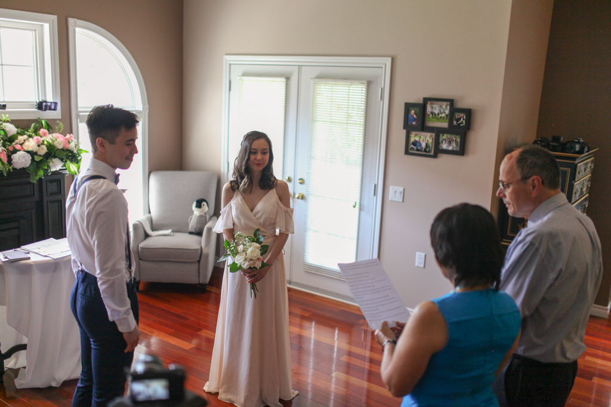

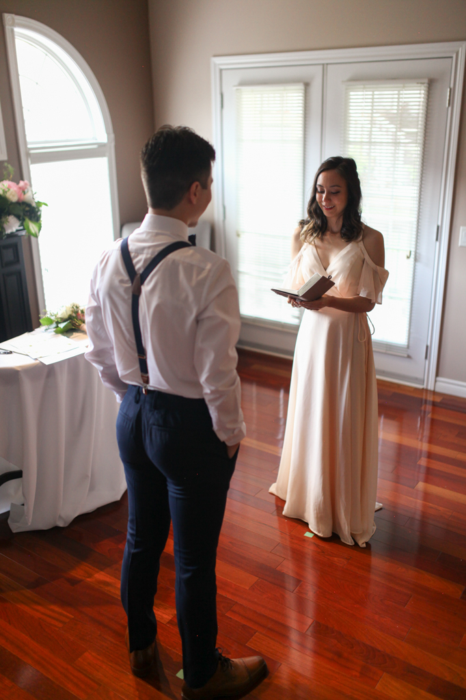


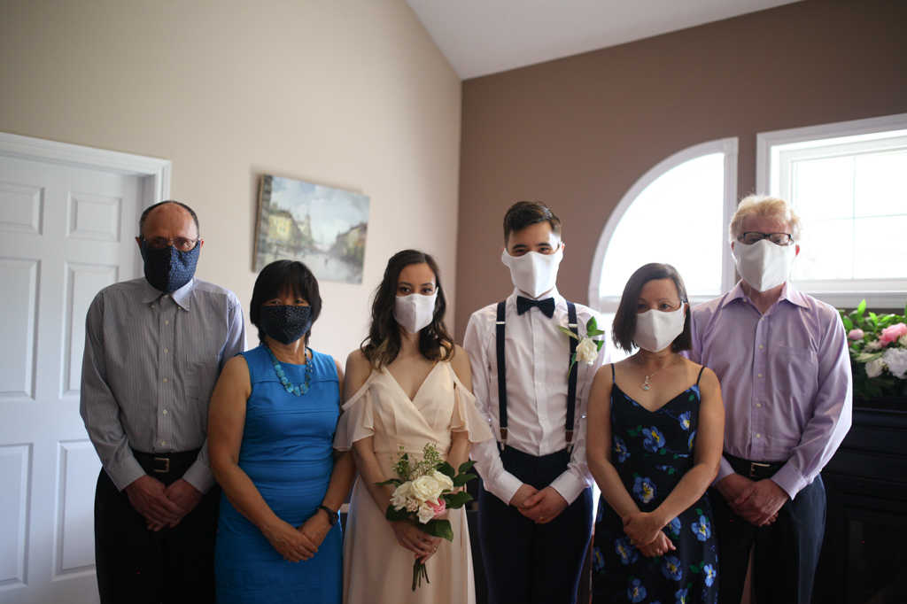


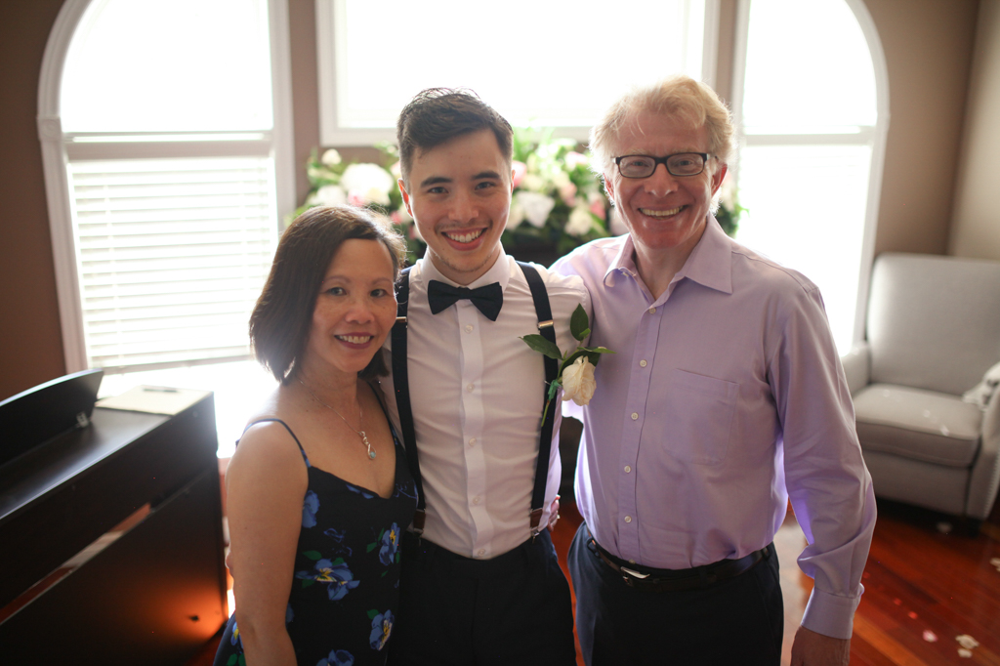

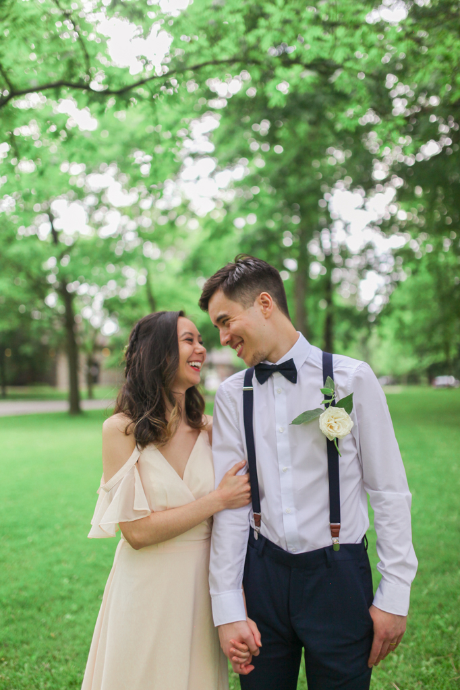
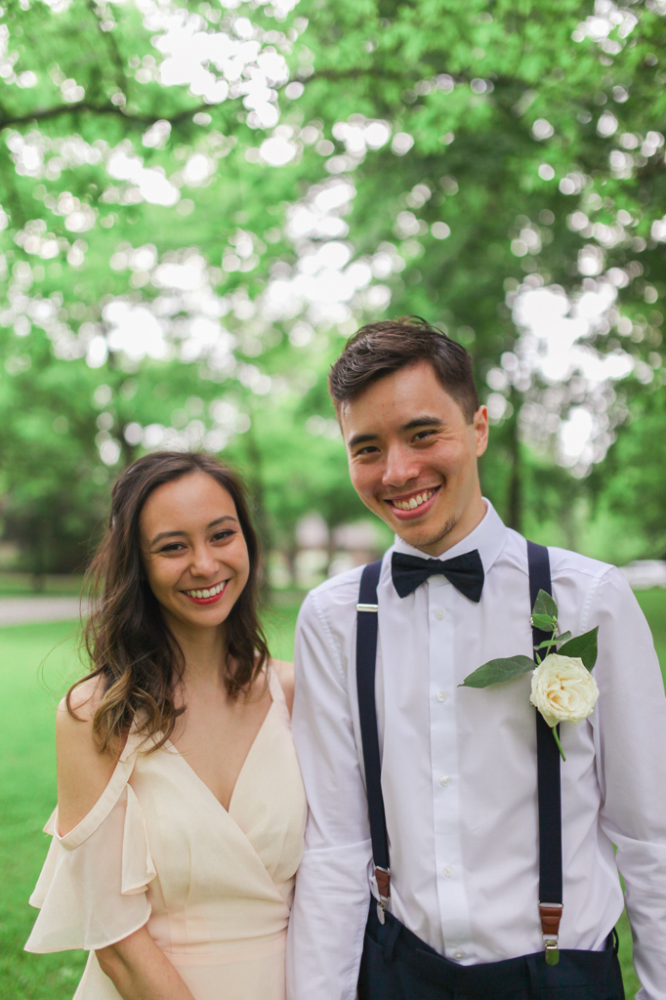


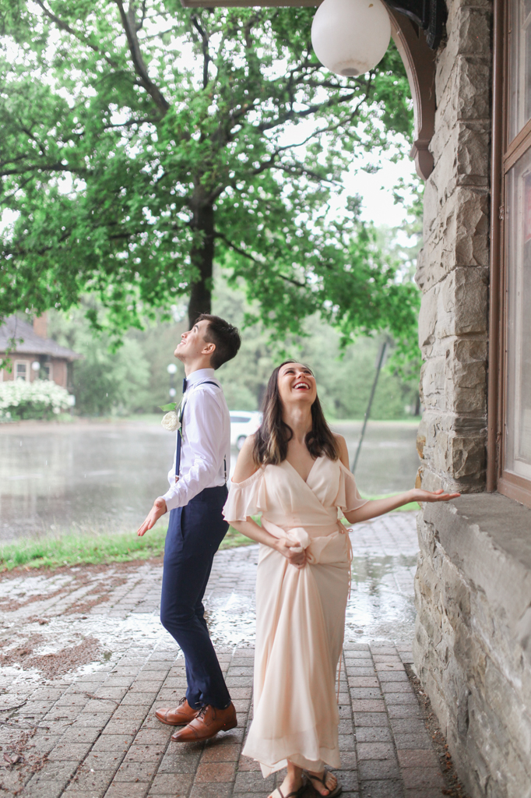
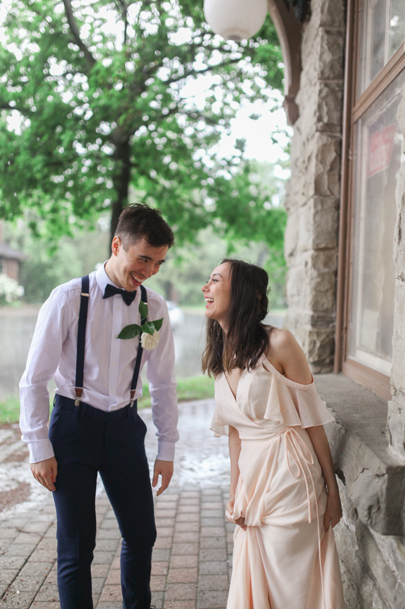

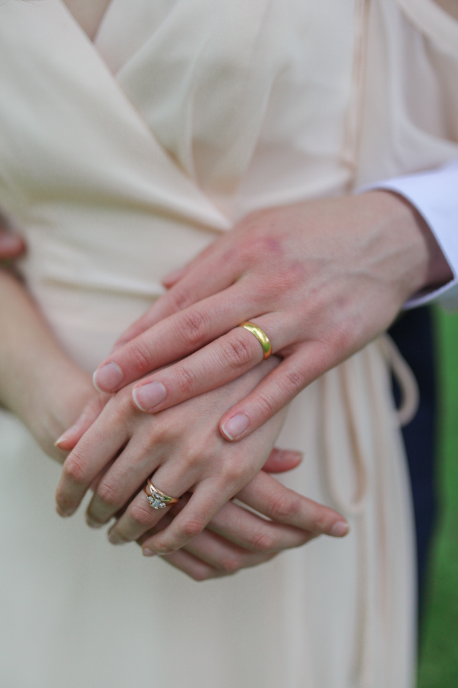

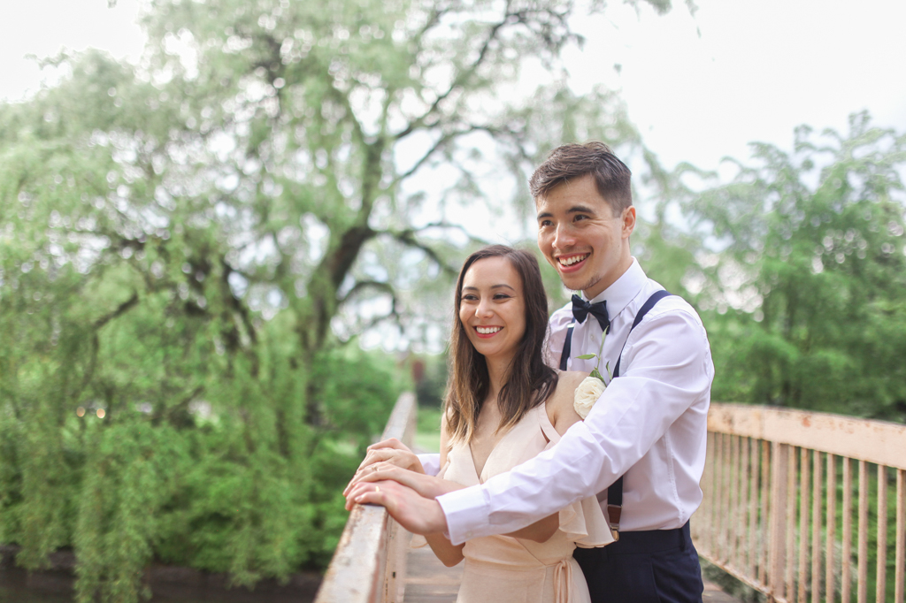
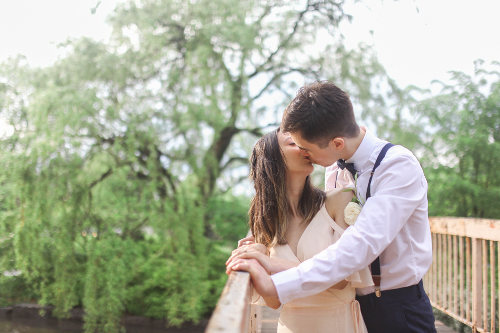

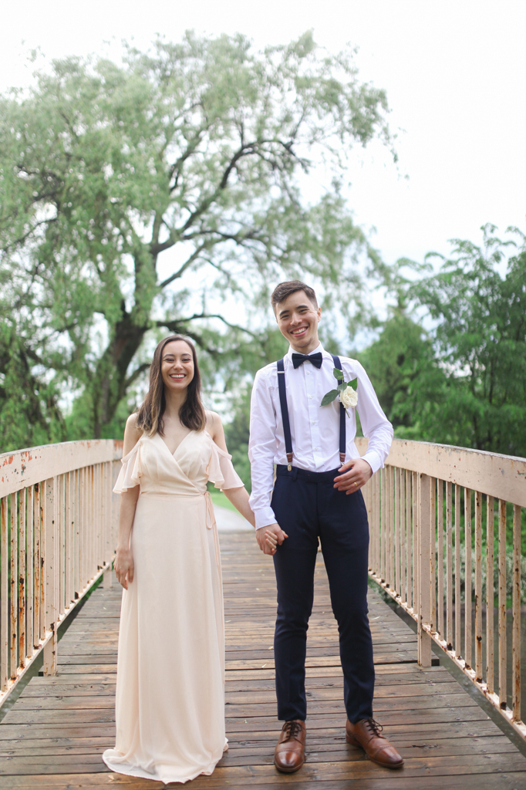


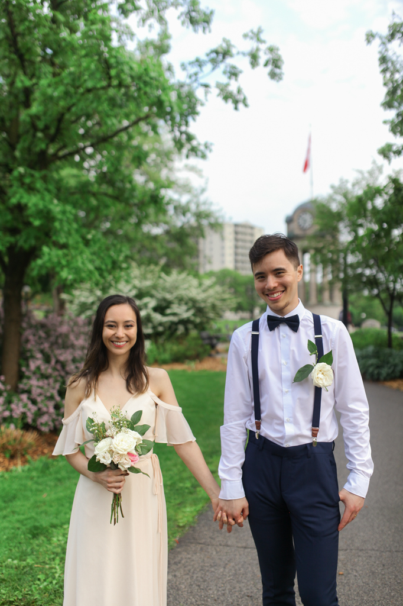